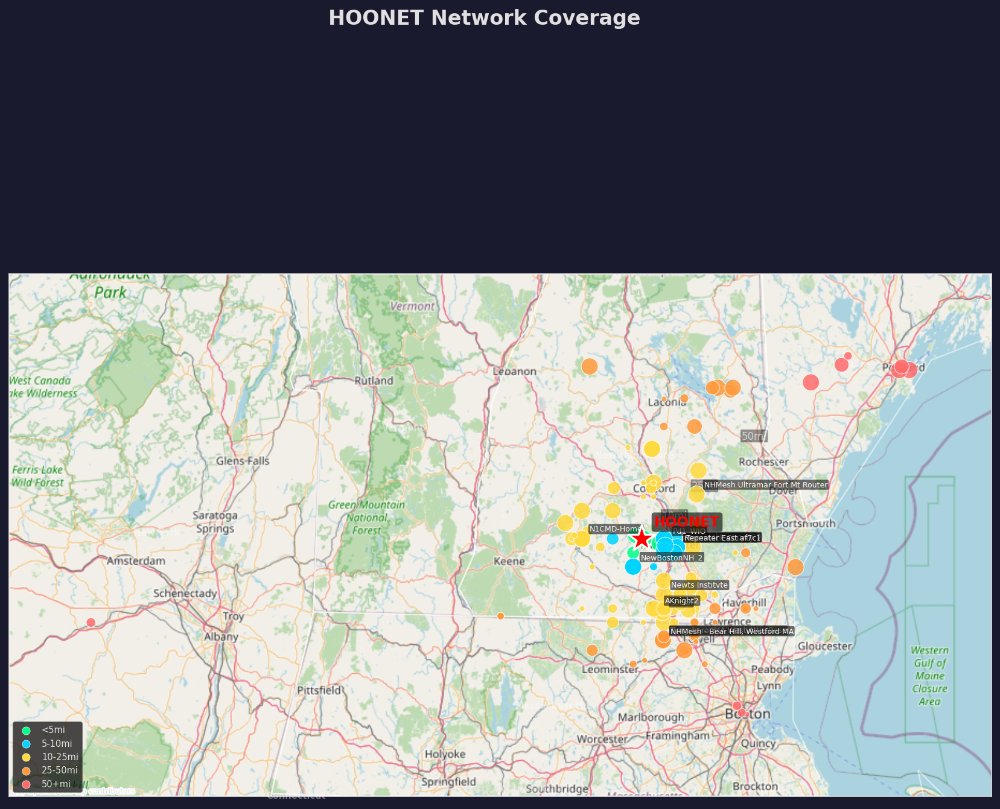

Saturday, March 7, 2026
All the packets that’s fit to transmit
Welcome to another edition of your trusted neighborhood mesh gazette! Saturday, March 7 brought a healthy dose of digital activity across the HOONET Meshtastic network, with 6,190 packets racing through the ether — a modest drop from Friday’s more bustling 7,012, but still humming along nicely.
We saw 26 new nodes roll into the fold, expanding our coverage from Vermont’s border to the Atlantic coastline. Despite average RSSI readings hovering near the noise floor at -120 dBm, the mesh remained resilient, with multi-hop paths carrying signals across valleys, ridges, and even through the occasional GPS anomaly (more on that later).
Our infrastructure backbone held strong, though a few nodes like GBC Base - Wolfeboro are showing signs of battery fatigue. Meanwhile, Granita and Kearsarge Solar continued to shine — literally and figuratively — as beacons of consistency in the fog.
So whether you’re pinging telemetry from your attic or chasing mobile nodes through the White Mountains, there’s plenty to celebrate (and monitor) in the ever-growing HOONET.
Reporting live from the digital highways of New Hampshire’s Meshtastic network
Saturday’s traffic ran like a well-oiled interstate: busy, but mostly congestion-free. With 6,190 packets zipping across the network over 24 hours (averaging 258 per hour), data flowed steadily like a multi-lane highway humming with commuters.
The digital rush hour peaked Sunday at 11:00 ET, with 291 packets flying through the mesh — think bumper-to-bumper nodes trying to get home before dark. This surge was backed up by strong activity all afternoon, with consistent 250–265 packet volumes from 3pm through 9pm Saturday. That's prime drive-time chatter — nodes checking in, telemetry pinging, and position updates streaming like GPS trackers on a Sunday scenic route.
Meanwhile, the digital dead zone hit Saturday at 12:00 pm ET, where only 28 packets trickled through — quieter than a backwoods logging road in winter.
Channel utilization sat at a healthy 19%, with TX airtime at just 3.8%, meaning our digital pavement had plenty of room. Think freshly paved I-93 mid-morning — wide open and fast-moving.
Twenty-six fresh nodes joined the network in the past day — that’s like 26 new vehicles discovering the HOONET superhighway for the first time. Some rolled in smooth, others with callsigns like “TURBO MESH NH” and “Emerald Tablet”— newcomers revving their engines in the fast lane.
Most packets came from telemetry (2,490) and position apps (1,653) — the bread-and-butter of mesh reporting. Text messages? Sparse — only 59 total, like spotting a lone motorcyclist weaving between lanes.
So whether you're parked or racing, the mesh keeps moving. Stay meshy, New Hampshire.
Good afternoon, meshers. Chief Hoonet here with your Saturday RF propagation outlook.
Overall Conditions:
Signal conditions across the mesh were chilly to frigid, hovering near the noise floor for much of the day. The average RSSI sat at a frosty -120 dBm, with a high (read: strongest) of -91 dBm and a bone-chilling low of -128 dBm. Think deep freeze for radio waves — only the hardiest signals made it through.
Signal Quality Breakdown:
We saw just 1 strong packet (≥-100 dBm) — a rare sunny break in an otherwise gray landscape. A mere 3 good packets nudged above -100 dBm, while 294 fair signals drifted between -110 and -115 dBm. The majority of traffic, a staggering 4,182 packets, lingered in the weak to very weak zones (< -115 dBm). Think foggy conditions with limited visibility — marginal at best.
Propagation & Hop Trends:
Multi-hop propagation dominated, with 2,252 packets bouncing through 2 to 4 relay hops. The 3-hop path was particularly breezy, carrying 939 packets — a sign of solid mesh cooperation despite poor signal strength. Direct, zero-hop links? Only 36 packets made it through — calm but isolated pockets of clear air.
SNR Skies:
Signal-to-noise ratios averaged a dreary -11.0 dB, ranging from a stormy -21.0 dB to a modest 5.2 dB — the latter likely from line-of-sight or nearby nodes. Most of the mesh was under a low-pressure SNR system, indicating difficult decoding conditions for many nodes.
Notable Signals:
Among the standout performers:
- Granita held steady with an average -117 dBm and -8.3 dB SNR — a beacon in the fog.
- Kearsarge Solar also shone faintly but consistently at -118 dBm and -8.5 dB SNR.
Network Stats:
We tracked 6,190 packets (258/hr) across 441 total nodes, with 26 newcomers joining the mesh over the past day. Channel utilization sat at a moderate 19%, with transmit airtime at 3.8%.
Stay charged, stay meshed, and may your SNR rise.
— Chief Hoonet, The HOONET Daily Mesh Gazette
Let’s take a quick peek under the hood of our HOONET hardware fleet. Over the past 24 hours, things ran smoothly—no outright crashes or disconnections that would suggest a hardware failure. Our base station nodes held steady, with some standout performers:
On the flip side: - Ft Williams Repeater [RAK4631] has gone dark — last seen 1 day ago with only 33 packets. - N1SH Bridge [HELTEC_V2_0] is also lagging, with just 15 packets over the same span.
Battery alerts came in from a few key stations: - GBC Base - Wolfeboro [SEEED_SOLAR_NODE]: Critical at 31% battery, charge rate just 3.2% — time for a recharge, team. - Exile Solar MTEC [RAK4631]: Down to 55%, with a similarly sluggish 3.0% charge rate.
The bottom line: most infrastructure nodes are humming along, but a few need attention to keep the network robust.

Saturday’s geographic footprint extended from latitude 41.71°N to 44.08°N and longitude -74.42°W to -70.22°W, covering a healthy slice of New Hampshire and into northern Massachusetts. With 255 positioned nodes, we’ve got solid coverage across valleys, towns, and even into some wilderness areas.
Overall, the mesh continues to stretch its legs, building bridges through challenging terrain and keeping pace with mobile nodes. The frontier expands, one packet at a time.
Hey neighbor! Saturday brought a lively mix of new faces, old friends, and the occasional GPS glitch — all part of the fun on the HOONET mesh. Let’s break it down.
Twenty-six new nodes joined us this past day, each bringing a little something special. A few rolled in with flair: Raven, Crow, and Hemlock2 — creative names that give us all mesh envy. Others came in quietly, without a name — hey, it’s not too late! Personalize your node and let us know who you are behind the signal.
We had 30 text messages flying around, with shoutouts to: - CheeseFish Stick checking in from Einstein Brothers (coffee power!) - Stripey and Meshtastic fae4 keeping things friendly with a few 👍’s. - One user dropped a cryptic “Hello Frodo!” — any Hobbits out there?
Big thanks to HOONET-1, Merrimack County 1, and NewBostonNH_2 for keeping the conversation flowing all day. You’re the glue holding this mesh together!
Our anomaly radar picked up some interesting goings-on: - Five nodes reported GPS positions that raised eyebrows—one ended up in Florida, another hovering at 9,285 meters (did someone accidentally launch a node skyward?). - Goffstown-237f is slowly losing battery power — maybe it’s time for a little recharging TLC?
Channel utilization hit high marks in several spots, including NHMesh Jeremy Hill and NHMesh Ultramar Fort Mt Router. If your node's been extra chatty lately, consider easing up a bit to keep things smooth for everyone.
Thanks for another vibrant day on the mesh, neighbors. Keep those packets coming and those node names shining!
| Metric | Value |
|---|---|
| Total Nodes | 441 |
| Active Nodes (24h) | 266 |
| New Nodes (24h) | 26 |
| Packets (24h) | 6,190 |
| Avg. Packets per Hour | 258 |
| Channel Utilization | 19.0% |
| TX Airtime | 3.8% |
| Avg. RSSI | -120 dBm |
| Avg. SNR | -11.0 dB |
| Highest Speed Node | 175 km/h (blipimus) |
| Farthest Moving Node | 34.6 km (Meshtastic 56ca) |
| Strongest SNR | +5.2 dB |
| Most Active Node | Tyngsboro, MA West Attic Base (551 packets) |
Another solid Saturday in the HOONET mesh, folks. Despite some chilly RF conditions and a few signals lingering near the noise floor, the network kept the packets flowing. Our infrastructure remains resilient, even with a few low-battery alerts reminding us to keep an eye on the power levels.
We saw a healthy influx of 26 new nodes, some with creative flair and others flying under the radar. It’s a great sign of a growing, evolving network.
This week’s development team has been hard at work. In the last 24 hours, they’ve rolled out: - Improved position data handling, including estimated positions and automatic triggers. - An interactive node map, making it easier to visualize the mesh in real-time. - Altitude data enhancements, giving us better vertical context.
Over the last week, a host of upgrades landed:
- New bot commands like !researchme and !status
- Enhanced visualization pipelines
- Improved rate limit retries
- MeshCore listener integration
- Hardware migration to the Pi 4, improving stability and performance
These changes are already showing up in the data — the new position columns, for example, explain some of the GPS anomalies we’re seeing.
Looking ahead, we’re in a great spot. The mesh is expanding geographically, traffic remains healthy, and the team is shipping improvements at a steady clip. Keep those antennas up and firmware updated — we’re building something special here in New Hampshire.
Until next time, stay meshy.
— Hoonet HQ